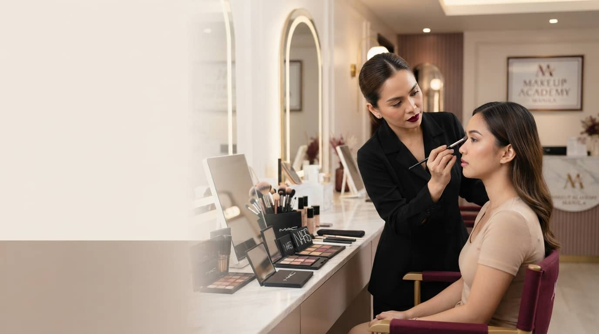
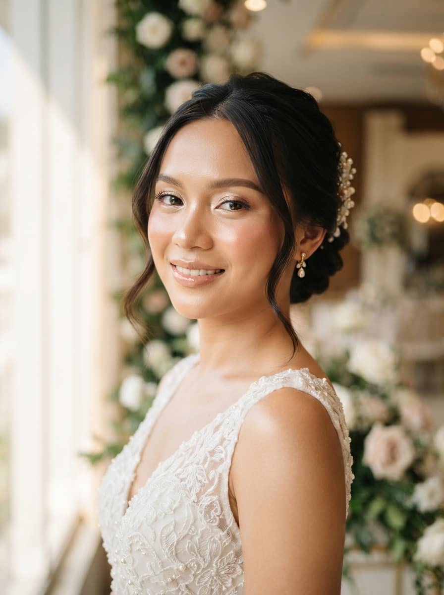
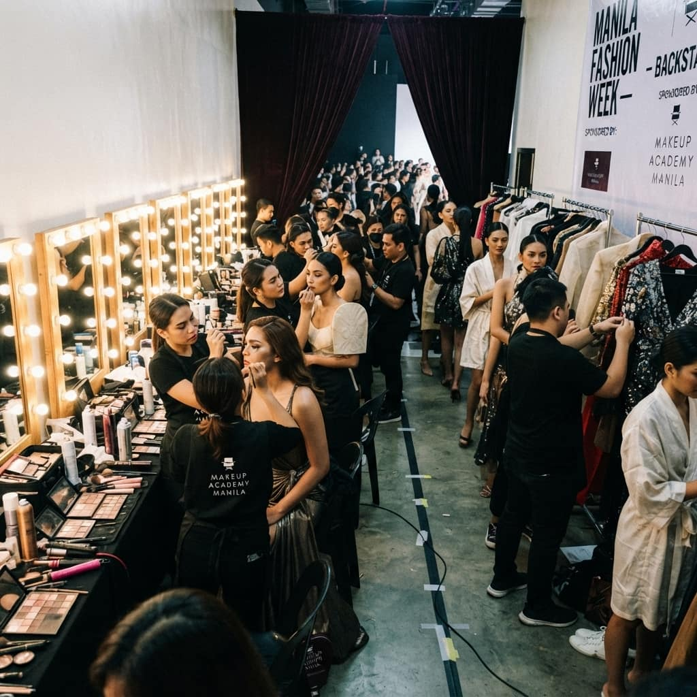
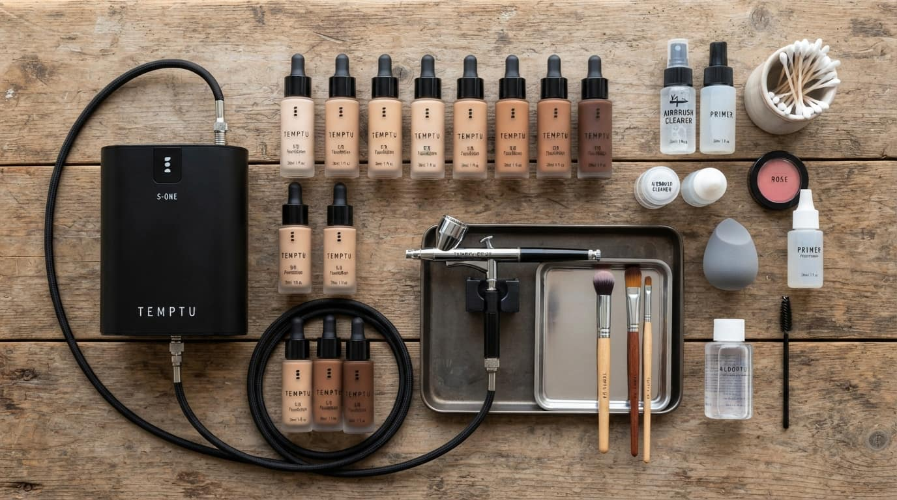

Professional Makeup & Hairstyling Training, Done Face to Face.
Hands-on makeup and hairstyling classes taught by working industry artists. Guided practice on live models builds the technique you will actually use on the job.
Makeup Is a Physical Craft. Brush Pressure, Blending Timing, and Skin Reading Do Not Survive a Screen.
In the studio, instructors stand beside you: adjusting your angle, correcting your blend, and fixing the habit while it forms.
- Branded cosmetics and professional tools in every class
- Real models, not mannequins
- Small class sizes for individual attention
- Practice-based learning, not passive demos
Three Ways Artists Start with Us.
Graduates Step onto Stages, Film Sets, and Bridal Fair Floors.
The academy's work happens outside the studio too: these are bookings and recognitions on the record.
See the full track record-
Newport Performing Arts Theater
Official makeup team for Bongga Ka and ’Day!: The Annie Batungbakal Musical
-
7th Global Trends
Notable Academy for Make Up Artistry
-
Philippine Bridal Fairs
Leading participation, showcasing the Makeup Academy Manila Bride aesthetic
-
IROG Year 7
Official judge, Bridal Hair & Makeup Competition
Face to Face, on Real Faces.
Practice happens on live models, at studio vanities with real client lighting, and eventually on the academy's own bookings.



“The best school I had in Manila. Miss Faye Young and amazing crew treats you like family. Because of them I am now part of a film production.”
“I took up basic fundamentals of makeup application and advanced pro. Best mentors to teach you about the theory and practice of makeup. 10/10 will enroll again!”
“This is a total package if you really want to make makeup a business.”
Admissions
Ready to Start Your Training?
Tell us which course interests you. We will send the next available dates and everything you need to get started.
- Studio days
- Monday to Saturday
- Class size
- Small groups, direct instructor time
- OJT
- Film, TV, stage and theatre bookings